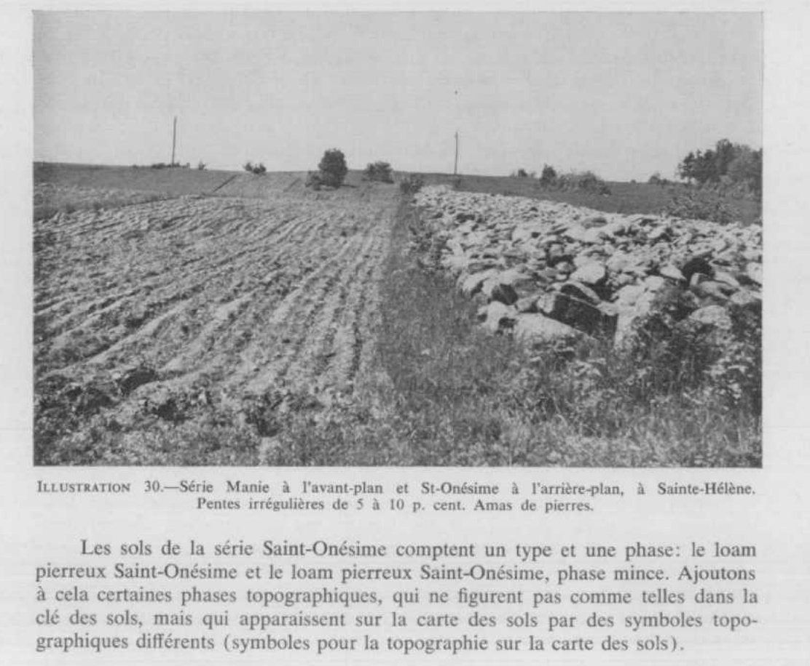

Identification & Caractéristiques Générales
Le matériau parental de la série Manie est constitué d'un till morainique basal hétérométrique dérivé des schistes et grès du groupe d'Armagh, caractéristique de la zone externe du plateau appalachien et de la bordure sud de l'estuaire du Saint-Laurent. Ce dépôt glaciaire meuble forme des couvertures minérales sur les replats et les côteaux surbaissés, modelant un microrelief faiblement ondulé. La topographie se caractérise par des pentes régulières et douces, généralement comprises entre 2 et 5 %, ce qui différencie cette série des formations plus accidentées de la même catena.
Sur le plan morphologique, le profil pédologique présente une texture limoneuse à loam pierreux en surface, reposant sur un matériau sous-jacent contenant une forte proportion de fragments rocheux anguleux. Le profil se caractérise par le développement d'un horizon compact de type fragipan, généralement situé entre 35 et 45 centimètres de profondeur, lequel restreint la percolation verticale et induit une nappe perchée temporaire lors de la fonte des neiges ou des épisodes pluvieux intenses. Ce régime hydrique confère au sol un drainage naturel modérément bon. La perméabilité est modérée dans le solum mais devient lente au niveau de la couche indurée, tandis que la réaction globale du sol montre une acidité marquée nécessitant des interventions correctives.
Les aptitudes agronomiques de ces sols sont conditionnées principalement par la pierrosité de surface et la présence du fragipan, qui restreint l'enracinement profond tout en constituant une réserve hydrique utile lors des périodes de sécheresse estivale. Le relief plus favorable que celui des séries adjacentes permet la mise en culture d'une gamme variée de productions, notamment l'avoine, le trèfle et la luzerne, bien qu'une proportion importante du territoire demeure vouée aux pâturages ou aux peuplements forestiers. La mise en valeur agricole requiert un programme régulier de épierrage, un chaulage méthodique pour neutraliser l'acidité, ainsi qu'un réseau de drainage souterrain adéquat pour pallier les excès hydriques temporaires induits par l'horizon imperméable.
Classification Taxonomique & Environnement Pédologique
| Ordre Pédologique | Podzolique |
|---|---|
| Grand Groupe (SCSS) | Podzol humo-ferrique |
| Sous-Groupe Taxonomique | Podzol humo-ferrique fragique |
| Famille Pédologique | Loameuse-grossière, mixte sableux, acide |
| Mode de Dépôt Parental | Morainique |
| Classe de Drainage Naturel | Modérément bien drainé |
| Régime Thermique & Humidité | Frais / Humide |
Description Morphologique du Profil Type
Séquences génétiques des horizons pédologiques caractérisant le profil type représentatif de la série Manie :
Profil naturel (vierge) — Comté de Kamouraska
✓ Source : Comté de Kamouraska — Page 90Couleur Munsell : 10YR 2/1
Structure & Consistance : Polyédrique à granulaire
Description morphologique : Humus noir (10YR 2/1) à l'état humide; fibreux non minéralisé, friable; limites abruptes; pH 4.3–4.5.
Couleur Munsell : 7.5YR 6/2
Structure & Consistance : Finement lamellaire peu développée
Description morphologique : Loam gris rosé (7.5YR 6/2) à l'état humide; structure finement lamellaire peu développée; friable, net et irrégulier, quelques pierres, pH 4.3–4.6.
Couleur Munsell : 10YR 4/4, 7.5YR 5/6
Structure & Consistance : Granulaire modérément développée
Description morphologique : Loam brun vif (7.5YR 5/6–5/8) à brun jaune foncé (10YR 4/4) à l'état humide; structure granulaire modérément développée; consistance très friable; quelques pierres et racines; net, sinueux, pH 4.9–5.1.
Couleur Munsell : 10YR 4/3
Structure & Consistance : Granulaire moyenne faiblement développée
Description morphologique : Loam brun foncé (10YR 4/3) à l'état humide; structure granulaire moyenne faiblement développée; consistance friable; avec pierres, mouchetures rares, limites nettes, sinueux, pH 5.3–5.5.
Couleur Munsell : 10YR 4/2
Structure & Consistance : Polyédrique grossière
Description morphologique : Loam brun gris foncé (10YR 4/2) à l'état humide; structure polyédrique grossière, consistance ferme; limites nettes et unies; avec mouchetures, pH 5.1.
Couleur Munsell : 10YR 4/3
Structure & Consistance : Massive à grossièrement polyédrique
Description morphologique : Loam brun foncé à brun (10YR 4/3) à l'état humide; structure massive à grossièrement polyédrique, très ferme en place et se brise en gros polygones; se brise avec éclats à sec (fragipan); limites graduelles, sinueux, avec mouchetures, pH 5.5.
Couleur Munsell : 10YR 4/4
Structure & Consistance : Polyédrique à granulaire
Description morphologique : Matériau originel: loam brun foncé à brun (10YR 4/4) à l'état humide; moins compact que l'horizon précédent, coloration plus uniforme, moins de mouchetures, pierreux, pH 5.2.
Couleur Munsell : Non précisée
Structure & Consistance : Polyédrique à granulaire
Description morphologique : Roc fréquemment observé à moins de trois ou quatre pieds de profondeur.
Profil forestier / boisé — Comté de L'islet
✓ Source : Comté de L'islet — Page 69Couleur Munsell : 10YR 3/2, 10YR 5/2
Structure & Consistance : Polyédrique à granulaire
Description morphologique : Humus brun-gris très foncé (10 YR 3/2 h) à brun-gris (10 YR 5/2 s); fibreux, peu minéralisé, friable; limite abrupte; pH 4,7.
Couleur Munsell : 5YR 5/1, 5YR 8/1
Structure & Consistance : Lamellaire peu développée
Description morphologique : Loam gris (5 YR 5/1 h) à blanc (5 YR 8/1 s); structure lamellaire peu développée; friable; quelques pierres; limite nette et irrégulière; pH 4,7.
Couleur Munsell : 5YR 4/4, 10YR 6/5
Structure & Consistance : Granulaire modérément développée
Description morphologique : Loam brun foncé (7,5 YR 4/4 h) à jaune-brun (10 YR 6/5 s); structure granulaire modérément développée; consistance très friable; quelques pierres et racines; limite nette et sinueuse; pH 5,0.
Couleur Munsell : 10YR 4/4 (matrice), 10YR 6/4 (marbrures)
Structure & Consistance : Granulaire moyenne
Description morphologique : Loam brun-jaune foncé (10 YR 4/4 h) à brun-jaune clair (10 YR 6/4 s); structure granulaire moyenne, faiblement développée; consistance friable; mouchetures rares, faibles; quelques pierres; limite sinueuse; pH 5,2.
Couleur Munsell : 10YR 4/3 (matrice), 10YR 7/3 (marbrures)
Structure & Consistance : Polyédrique grossière
Description morphologique : Loam brun foncé (10 YR 4/3 h) à gris clair (10 YR 7/3 s); structure polyédrique grossière; consistance ferme; avec mouchetures rares, faibles; raies grises rares; limite nette et régulière; pH 5,2.
Couleur Munsell : 5YR 4/2 (matrice), 10YR 7/2 (marbrures)
Structure & Consistance : Polyédrique à polyédrique grossière
Description morphologique : Loam brun-gris foncé (7,5 YR 4/2 h) à gris clair (10 YR 7/2,5 s); structure polyédrique à polyédrique grossière; très ferme en place; se brise en gros polygones fragiles (brittle); mouchetures fréquentes, distinctes; limite graduelle sinueuse; pH 5,2.
Couleur Munsell : 10YR 3/3 (matrice), 10YR 6/2 (marbrures)
Structure & Consistance : Polyédrique à granulaire
Description morphologique : Loam brun foncé (10 YR 3/3 h) à gris-brun clair (10 YR 6/2 s); moins compact que l'horizon précédent; coloration plus uniforme; mouchetures rares, distinctes; quelques pierres; pH 5,3.
Couleur Munsell : Non précisée
Structure & Consistance : Polyédrique à granulaire
Description morphologique : Roc fréquemment observé à moins 0,9 ou 1,2 m de profondeur.
Profil forestier / boisé — Comté de Rivière-du-loup
✓ Source : Comté de Rivière-du-loup — Page 71Couleur Munsell : 10YR 3/2, 10YR 5/2
Structure & Consistance : Polyédrique à granulaire
Description morphologique : Humus brun-gris très foncé (10 YR 3/2 h) à brun-gris (10 YR 5/2 s), fibreux; peu minéralisé, friable; limite abrupte; pH: 4,7.
Couleur Munsell : 5YR 5/1, 5YR 8/1
Structure & Consistance : Lamellaire peu développée
Description morphologique : Loam gris (5 YR 5/1 h) à blanc (5 YR 8/1 s); structure lamellaire peu développée; friable; quelques pierres; limite nette et irrégulière; pH: 4,7.
Couleur Munsell : 7.5YR 4/4, 10YR 6/5
Structure & Consistance : Granulaire modérément développée
Description morphologique : Loam brun foncé (7.5 YR 4/4 h) à jaune-brun (10 YR 6/5 s); structure granulaire modérément développée; consistance très friable; quelques pierres et racines; limite nette et sinueuse; pH: 5,0.
Couleur Munsell : 10YR 4/4 (matrice), 10YR 6/4 (marbrures)
Structure & Consistance : Granulaire moyenne
Description morphologique : Loam brun-jaune foncé (10 YR 4/4 h) à brun-jaune clair (10 YR 6/4 s); structure granulaire moyenne, faiblement développée; consistance friable; mouchetures rares, faibles; quelques pierres; limite sinueuse; pH: 5,2.
Couleur Munsell : 10YR 4/3 (matrice), 10YR 7/3 (marbrures)
Structure & Consistance : Polyédrique grossière
Description morphologique : Loam brun foncé (10 YR 4/3 h) à gris clair (10 YR 7/3 s); structure polyédrique grossière; consistance ferme; avec mouchetures rares, faibles, raies grises rares; limite nette et régulière; pH: 5,2.
Couleur Munsell : 7.5YR 4/2 (matrice), 10YR 7/2.5 (marbrures)
Structure & Consistance : Massive à polyédrique grossière
Description morphologique : Loam brun-gris foncé (7.5 YR 4/2 h) à gris clair (10 YR 7/2.5 s); structure massive à polyédrique grossière; très ferme en place; se brise en gros polygones fragiles (brittle); mouchetures fréquentes, distinctes; limite graduelle sinueuse; pH: 5,2.
Couleur Munsell : 10YR 3/3 (matrice), 10YR 6/2 (marbrures)
Structure & Consistance : Polyédrique à granulaire
Description morphologique : Loam brun foncé (10 YR 3/3 h) à gris-brun clair (10 YR 6/2 s); moins compact que l'horizon précédent; coloration plus uniforme; mouchetures rares, distinctes; quelques pierres; pH: 5,3.
Couleur Munsell : Non précisée
Structure & Consistance : Polyédrique à granulaire
Description morphologique : Roc fréquemment observé à moins 0,9 ou 1,2 m de profondeur.
Profils Photographiques & Planches de Terrain
Documents iconographiques, figures pédologiques et coupes de terrain documentées dans les mémoires d'inventaire pour de la série Manie :

Propriétés Physico-Chimiques & Analyses de Laboratoire
Données Analytiques de Laboratoire
Aucune analyse physico-chimique quantitative de laboratoire (granulométrie par sédimentométrie, pH H₂O/CaCl₂, matière organique Walkley-Black ou bases échangeables) n'a été consignée pour cette unité dans les archives historiques numérisées ou les bases contemporaines EESSAQ/MAPAQ.
Particularités Régionales, Phases & Variantes Pédologiques
Déclinaisons régionales, faciès texturaux, phases d'érosion ou de pierrosité et variantes cartographiées par étude pour de la série Manie :
| Étude Régionale | Symbole | Appellation / Phase / Variante | Différenciation avec la série type (Analyse pédologique) |
|---|---|---|---|
| Comté de Kamouraska | Ma |
Manie loam pierreux | Modalité modale de référence (type de base de la série). |
| Comté de L'islet | Ma |
Manie loam pierreux | Phase pierreuse. |
| Comté de Rivière-du-loup | Ma |
Manie loam pierreux | Phase pierreuse. |
Distribution Pédo-Paysagère & Représentativité Cartographique (Couverture PPS 2026)
- Mont-Carmel loam pierreux (MOM) — co-occurrente dans 309 polygone(s)
- Saint-Onésime loam pierreux (SAS) — co-occurrente dans 255 polygone(s)
- Ixworth loam humifère pierreux (IXW) — co-occurrente dans 93 polygone(s)
Aptitudes Agronomiques, Hydropédologie & Conservation des Sols
Indicateurs Hydropédologiques & Vulnérabilité à l'Érosion (BDHP 2026)
Interprétation BDHP : Potentiel de ruissellement modérément élevé. Faible taux d'infiltration, présence d'horizons ralentissant le drainage descendant.
Classement selon l'Inventaire des Terres du Canada (ITC / CLI) : Classe 1.
- Potentiel agricole : Terroir adapté aux cultures régionales selon la texture dominante et la régie de drainage.
- Contraintes majeures : Modérément bien drainé. Risque d'engorgement temporaire ou d'excès d'eau printanier.
- Gestion & Aménagement : Drainage souterrain ou superficiel préconisé sur les terres planes. Chaulage et apport organique régulier selon les bilans agronomiques.
- Cultures adaptées : Grandes cultures (maïs, soya, céréales), prairies fourragères et cultures maraîchères selon le contexte géomorphologique.